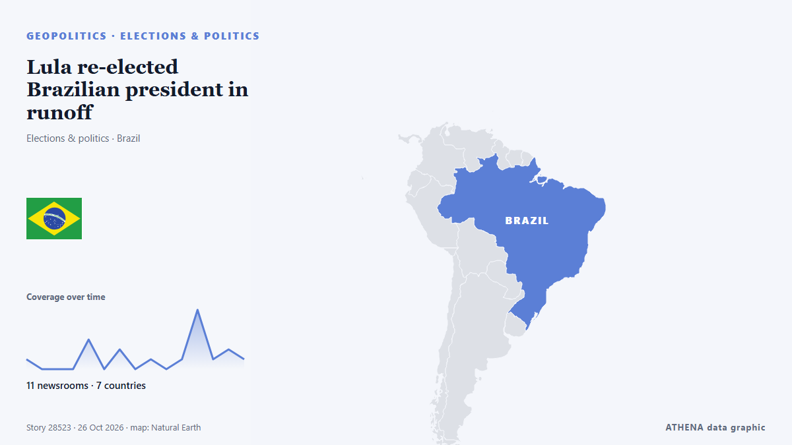

Lula re-elected Brazilian president in runoff

Brazilians are going to the polls today to elect a president in a run-off vote that is being closely watched around the world. von Sky News (World)
Unabhängig gemeldet von 11 Medien in 7 Ländern seit dem 25. Okt., zuerst von Sky News (World); die Berichterstattung ist auf dem Höhepunkt. ATHENA findet in der Berichterstattung keine Risikoindikatoren. Die Konfidenz liegt bei 88 % (hoch): 11 Medien bestätigen es unabhängig, bei einer mittleren Verlässlichkeit der Quellen von 79 %.
Warum es wichtig ist: Sicherheits- und diplomatische Entwicklungen können Bündnisse, Handel und Märkte weit über die direkt beteiligten Länder hinaus verschieben.
Was sich geändert hat: 17 neue Berichte von 10 Redaktionen in den 24 Stunden bis 26. Okt..
Schlagzeilen werden auf Englisch angezeigt, wie veröffentlicht.
Auf einen Blick
Ausgewählt, bewertet und geschrieben nach der veröffentlichten Methodik von ATHENA. Kein Redakteur greift in einzelne Ereignisse ein. So entsteht ATHENA ›
| 25 Oct 01:11 UTC | 1 |
|---|---|
| 25 Oct 03:11 UTC | 0 |
| 25 Oct 05:11 UTC | 0 |
| 25 Oct 07:11 UTC | 0 |
| 25 Oct 09:11 UTC | 3 |
| 25 Oct 11:11 UTC | 0 |
| 25 Oct 13:11 UTC | 2 |
| 25 Oct 15:11 UTC | 0 |
| 25 Oct 17:11 UTC | 1 |
| 25 Oct 19:11 UTC | 0 |
| 25 Oct 21:11 UTC | 1 |
| 25 Oct 23:11 UTC | 6 |
| 26 Oct 01:11 UTC | 1 |
| 26 Oct 03:11 UTC | 2 |
| 26 Oct 05:11 UTC | 1 |
Warum diese Zahlen
Bedeutung
Risiko
Konfidenz
Die Berichterstattung – wer berichtete, und wann
Schlagzeile wie veröffentlicht · öffnet das Original- Sky News (World) · Vereinigtes Königreich · United KingdomBrazilians head to the polls with left-winger and son of Trump ally neck and neck
- Türkiye Today · Türkei · TurkeyLula, Bolsonaro neck and neck as Brazilians vote in runoff
- The New Arab · INTLula, Bolsonaro Jr neck and neck as Brazil heads to runoff polls
- The Rio Times · Brasilien · BrazilBrazilians in China Back Lula, Count Shows
- The Rio Times · Brasilien · BrazilBrazilians in Japan Back Flávio, Count Shows
- The Independent · Vereinigtes Königreich · United KingdomBrazilians head to the polls to vote in tense Lula vs Bolsonaro runoff election
- The Rio Times · Brasilien · BrazilBrazilians Abroad Split in Runoff Count
- The Rio Times · Brasilien · BrazilBrazilians in Germany Give Lula 79.1%
- CGTN (World) · ChinaLula declares victory in Brazil's presidential runoff
- Xinhua (English) — page reader · ChinaLula re-elected Brazilian president in runoff
- The Independent · Vereinigtes Königreich · United KingdomBrazilian election: Lula da Silva wins historic fourth term in dramatic comeback
- Xinhua (English) — page reader · ChinaLula re-elected Brazilian president in runoff -- official results
- Xinhua (English) — page reader · ChinaXinhua News | Lula re-elected Brazilian president in runoff
- Xinhua (English) — page reader · ChinaLula re-elected Brazilian president in runoff -- official results
- Gulf News · Vereinigte Arabische Emirate · United Arab EmiratesBrazilian media projects Lula to win presidential runoff against Flávio Bolsonaro
- Anadolu Agency (English) · Türkei · TurkeyLula vows to govern for all Brazilians after historic reelection victory
- Al Jazeera English · Katar · QatarWorld reacts to Lula’s victory in Brazil’s presidential election
- TASS (English) · Russland · RussiaLula da Silva wins 51.79% of vote after 100% of ballots counted — electoral court